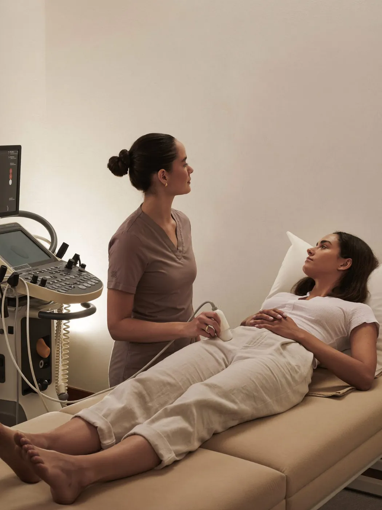
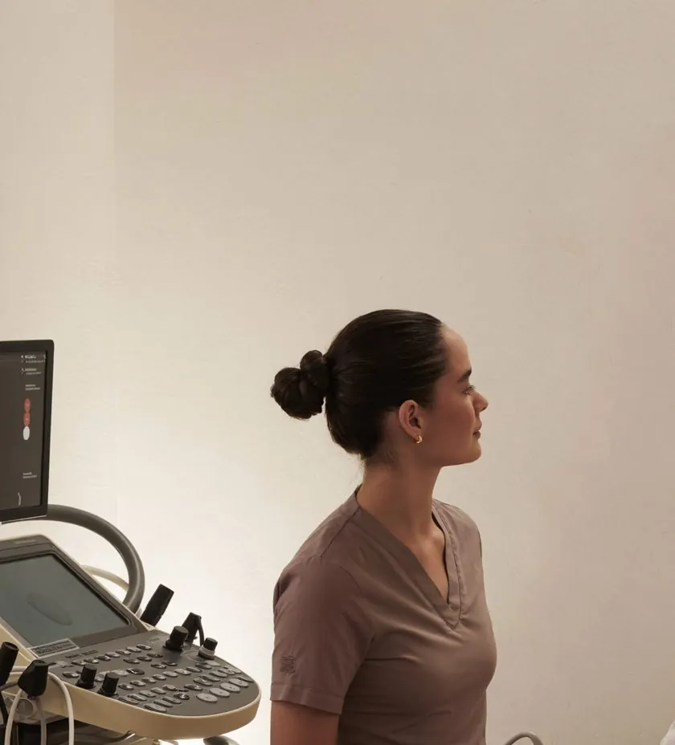

Medicina vascular · Pereira
Arañitas vasculares
Piernas más limpias, con un tratamiento sencillo y ambulatorio.


Qué es
Las arañitas (telangiectasias) son pequeños vasos visibles, rojos o violeta. Con escleroterapia —microinyecciones de una sustancia que cierra el vaso— y, cuando conviene, láser, van desapareciendo de forma progresiva.
Duración
30–45 minutos
Sesiones
2 a 4 sesiones, cada 4–6 semanas
Recuperación
Caminas de inmediato; medias de compresión unos días
Los tiempos son orientativos. En tu valoración te decimos qué aplica a tu caso.
Para quién
¿Es para ti?
Evaluamos antes de recomendar.
Preguntas frecuentes
Lo que suelen preguntarnos.
¿Por qué necesito una ecografía antes?+
Porque muchas arañitas son la señal visible de un problema venoso más profundo. Si no se trata la causa, vuelven.
¿Duele la escleroterapia?+
Se usan agujas muy finas. Se siente como pequeños pinchazos.
¿Pueden volver a salir?+
Los vasos tratados no vuelven, pero pueden aparecer nuevos. Te enseñamos cómo prevenirlos.
También te puede interesar
Várices
Más que estética: tus venas también hablan de tu salud.
AmbulatorioSin cirugía abiertaVer tratamiento →Diagnóstico precisoEco-doppler venoso
Ver cómo circula tu sangre antes de decidir nada.
30–40 minSin preparaciónVer tratamiento →Rojeces del rostroCuperosis y rojeces
Donde la piel y los vasos se encuentran.
20–30 min2–4 sesionesVer tratamiento →

Valoración médica
Conversemos sobre lo que quieres cuidar.
Primero te escuchamos. Luego recomendamos.